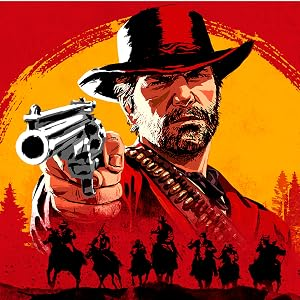
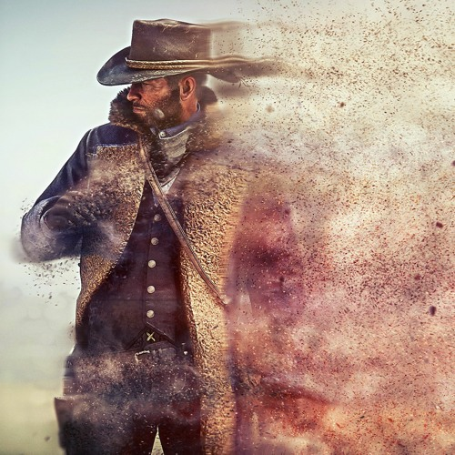
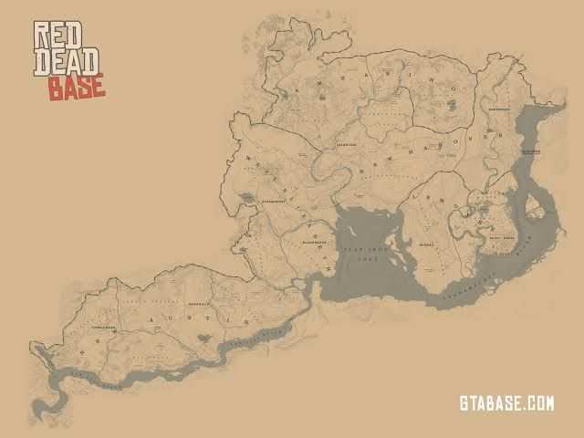

INFORMATION
Red Dead Redemption 2 (stylized as Red Dead Redemption II , abbreviated as RDR2 ) isopen -world action-adventure third-person shooter videogame developed by Rockstar Studios and published by Rockstar Games for the PlayStation 4 and Xbox One consoles on October 26, 2018, and for Windows personal computers on November 5, 2019. It is the third game in the Red Dead series and a prequel to2010 Red Dead Redemption.
Red Dead Redemption 2 , a Western -style game , takes place across several fictional US states at the turn of the 20th century. The game's story revolves around the adventures of Dutch Van der Linde's gang; the player controls one member, Arthur Morgan , and, after advancing to the epilogue, another member, John Marston . After a failed ferry robbery, the bandits are forced to hide in the wilderness from federal agents and bounty hunters. Red Dead Redemption 2 offers players the freedom to explore the game's vast world, discovering interesting locations and activities on their own—activities include shootouts, robberies, hunting wild animals, horseback riding, and finding collectibles (cigarette cards, catching legendary fish/animals, dinosaur bones, rock paintings, etc.). A unique "honor" system, which takes into account both the player's honorable and criminal actions, influences both the game's plot and gameplay.
Upon its release, Red Dead Redemption 2 , one of the most anticipated and widely advertised games of the time, broke several sales records—in just two weeks, it sold over 17 million copies, earning Rockstar over $725 million in revenue. It received rave reviews from the press, with reviewers praising the story, characters, player freedom, and the developers' extraordinary attention to detail. The game also won a number of prestigious awards throughout 2018, including Critic's Choice at the Golden Joystick Awards and Best Narrative and Best Soundtrack at The Game Awards . The game also won the 22nd annual DICE Awards —an award from the Academy of Interactive Arts & Sciences —in the Outstanding Technical Achievement category.
Red Dead Redemption 2 is an open-world action-adventure game ; the player controls a single character with the option to switch the camera between first-person and third-person perspectives . The game features both single-player and multiplayer modes, the latter of which is called Red Dead Online . For most of the single-player story campaign, the player controls Arthur Morgan, a member of the Van der Linde gang. The story campaign consists of a series of missions—linear scenarios with a clearly defined objective for each—that the player must complete in sequence. Outside of missions, the player is free to explore the game's vast world, discovering points of interest and side quests. The player can engage enemies using melee attacks and weapons, as well as a variety of firearms and explosives.
HONOR SCALE
As in the previous game , the game features an "honor meter" determined by the player's actions: benevolent and noble deeds (helping strangers, selflessness, generosity, etc.) contribute to the character's reputation, moving the current value toward the white slider on the right, while unacceptable and immoral actions (murder, disorderly conduct, robbery, cruelty, kidnapping, etc.) earn the protagonist a reputation as a notorious bandit, moving toward the red slider. Honor is a crucial aspect of the game, as many key aspects change depending on the character's current reputation.
At a certain point in the game, the player will have to decide which path to take, as most equipment and some quests are only available at a certain honor level. Honor also determines how the world perceives the protagonist. The higher the honor level, the better the in-game attitude of NPCs toward the protagonist, vendors will sell equipment at a lower price, and special quests from unrelated NPCs will become available. Reaching the maximum or minimum honor level awards a specific achievement. Also, depending on the honor level, certain dialogue options will be unlocked.
PLOT
CHARACTERS
Characters
The game's protagonist is Arthur Morgan, a member of Dutch Van der Linde's gang. Besides Arthur, Dutch's gang consists of about 20 other members, including some characters from the previous game in the series, Red Dead Redemption . In the epilogue, the protagonist is John Marston , the protagonist of Red Dead Redemption . The Van der Linde gang faces Pinkerton detective agency agents hired by magnate Leviticus Cornwall, led by Andrew Milton, as well as outlaws from Colm O'Driscoll's rival gang.
HISTORY
The game begins in 1899 , when, after a botched robbery of a Blackwater ferry , Dutch Van Der Linde's gang is forced to go into hiding, leaving all their money behind. Believing their time of lawlessness is coming to an end, the gang decides to earn enough money to retire. They rob a train belonging to tycoon Leviticus Cornwall; in response, Cornwall hires Pinkerton agents led by Andrew Milton to capture them.
After a shootout with Cornwall's men in Valentine, Dutch's gang leaves New Hanover and moves to nearby Lemoyne . There, they encounter two feuding families, the Grays and the Braithwaites. Dutch attempts to pit the families against each other, but the Grays, upon learning of this, stage an ambush in which gang member Sean McGuire is killed, and the Braithwaites kidnap John Marston's son, Jack. The gang retaliates against both families and learns that Jack is being held by Saint Denis crime boss Angelo Bronte. After recapturing the boy, the gang, acting on a tip from Bronte, robs a trolley station but is ambushed. After escaping pursuit, Dutch decides to take revenge and ultimately feeds Bronte to an alligator.
Van der Linde realizes the gang has no future in the United States and decides to rob a major bank in Saint-Denis and use the proceeds to escape to Australia or Tahiti . However, during the robbery, the gang is surrounded by Pinkertons. Agent Milton kills Hosea and arrests John, and Lenny is killed in the fight. Dutch, Arthur, Bill, Javier, and Micah escape the city on a ship bound for Cuba . The ship is caught in a storm and sinks, and the gang washes ashore on the island of Guarma, where they become embroiled in a war between sugarcane plantation owners and the enslaved local population . Dutch's group assists in the fight against the plantation owners and secures transport back to the United States.
Upon returning, the gang reunites, but they are immediately discovered by Pinkerton agents, and after a fierce firefight, they decide to change camp again. Abigail asks Dutch to break John out of prison, but he refuses. Arthur and Sadie then decide to do it themselves. Some time later, Arthur learns he has tuberculosis , having contracted it from farmer Thomas Downs, from whom he was collecting debts at the request of Leopold Strauss. Dutch begins to doubt Arthur's loyalty after he and Sadie break John out of prison, disobeying orders, and partly due to the manipulation of Micah, who willingly assumes the role of Hosea as Dutch's right-hand man. The gang begins to disintegrate. Van der Linde exploits a conflict between a local Native American tribe and the United States Army to divert attention from his gang, leading Arthur to become completely disillusioned with Dutch. As the story unfolds, it becomes clear that Micah was the traitor who contacted the Pinkerton agency after Guarma. Depending on the protagonist's honor, Arthur Morgan will either die peacefully from illness and wounds immediately after the final battle, or be killed.
Eight years later, in 1907 , John and his family, his beloved Abigail, and their son Jack, are searching for work with varying success and attempting to live a lawful life. Initially, John seeks work at the Pronghorn Ranch, where he works as a farmer and, despite Abigail's pleas to respect the law and live peacefully, helps the owner defend himself against the Laramie Gang, who are trying to take the Pronghorns' property away from him. This later leads his beloved to leave John, taking Jack with her. Marston remembers that Abigail wants to buy Beecher's Hope, a property near Blackwater. He takes out a bank loan and buys the property. Near the bank, John meets Uncle, with whom he travels to Saint Denis to find Charles Smith, who was involved in staged fights, and together they build a ranch . Around this time, he receives a telegram from Sadie Adler about a job as a bounty hunter. Marston accepts and works with her for a while. After all this, Abigail returns to John, after which he proposes to her.
Some time later, Sadie arrives at Beecher's Hope and reveals that she knows where Micah and his new gang might be, and that the Blackwater heist money is likely with him. Despite Abigail's pleas to stay, John asks her to understand that all they have would not have been if not for Arthur and the other gang members, killed due to Micah's betrayal, and therefore they must be avenged. They track Micah, discovering Dutch with him. However, Dutch ultimately shoots Micah and allows John to finish him off, then silently leaves, leaving a chest filled with gold and the Blackwater heist money in the cabin. John later officially marries Abigail and begins a new life on his ranch. The end credits reveal the subsequent fates of some of the main and supporting characters, as well as how the Bureau of Investigation, led by Edgar Ross, has tracked John down.
MUSIC
In late April 2017, it was reported that Argentine composer Gustavo Santaolalla , who had previously written music for The Last of Us, was working on the game's music [ 7 ] , but closer to the game's release, it was confirmed that Woody Jackson , who also composed for Red Dead Redemption , was writing the music for the game [ 8 ] [ 9 ] .
The game's songs were written by Daniel Lanois and performed by D'Angelo , Willie Nelson , Rhiannon Giddens , and Josh Homme .
In Red Dead Redemption 2 , according to the developers, there are three types of music [ 10 ] :
Narrative (narrative) - the music that plays during story missions;
Interactive (interactive) - music that plays when the player is in an open world or online game;
Environmental music is songs or music played by characters directly in the game.
As in their previous games, the developers used vertical mixing technology in RDR2 : musical compositions are divided into several (up to 15) layers, each of which represents a part of one or more instruments or effects, and these layers are combined in the game on the fly depending on what is happening on the screen.
On July 12, 2019, the first soundtrack album for Red Dead Redemption 2, Original Soundtrack [ 11 ] , was released . It included 13 songs written by Daniel Lanois and others. The track "Unshaken " was released as a single on January 4, 2019.
The Music of Red Dead Redemption 2 (Original Soundtrack)
On August 9, 2019, the second soundtrack album for Red Dead Redemption 2, Original Score [ 12 ] , was released . It included 22 compositions written by Woody Jackson and others.
The Music of Red Dead Redemption 2 Original Score
DEVELOPMENT
Red Dead Redemption 2 took eight years to develop ; while previous Rockstar Games titles were developed by separate internal studios in different countries—such as Rockstar North or Rockstar San Diego — Red Dead Redemption 2 involved all of the company's divisions worldwide working together as a single team . [ 13 ] It is the first Rockstar Games title to be developed from the ground up for eighth-generation console hardware . [ 14 ] The game is built on an updated version of the Rockstar Advanced Game Engine . [ 5 ]
FIRST INFORMATION
Rockstar Games formally confirmed that the game was in development on July 12, 2012, when they assured fans during a question and answer session that they could expect news about the Red Dead series in the future. [ 15 ] [ 16 ] Later in August, publisher Take-Two Interactive filed a trademark for the name . RED DEAD[ 17 ] On March 7, 2013, during the Wedbush Transformational Technologies conference , Take-Two's COO Karl Slatoff said that the Red Dead series was very important to their company. [ 18 ] and in May 2014, Take-Two chairman Strauss Zelnick stated that it was their "ongoing" franchise , alongside the Grand Theft Auto and Borderlands series . [ 19 ] [ 20 ] In August 2015, the domain REDDEAD.ONLINE[ 21 ] [ 22 ] [ 23 ] [ 24 ] [ 25 ] [ 26 ] was registered.
On April 13, 2016, a photo of concept art for a map allegedly for an unannounced game in the Red Dead series appeared online. [ 27 ] [ 28 ] A couple of days later, on April 15, the British publication TechRadar , citing a source close to Rockstar Games, confirmed the authenticity of the map, adding that the new game would be a prequel to Red Dead Redemption . [ 29 ] [ 30 ] [ 31 ] [ 32 ] [ 33 ] [ 34 ] [ 35 ] In late May 2016, a screenshot dated August 17, 2015, with the caption "RDR2" was discovered in the web portfolio of former Rockstar San Diego employee , artist Matt Kline . [ 36 ] [ 37 ] It shows a certain area with a cabin that was not present in the original Red Dead Redemption , and also shows a chromatic aberration effect that only appeared in the new version of the RAGE engine with the release of Grand Theft Auto V on eighth-generation game consoles . [ 38 ] [ 39 ] [ 40 ] [ 41 ] Following the reaction of gaming publications, the author removed the image from the album on June 2. [ 42 ] On June 11, 2016, concept art for an unknown project with a Wild West theme was found on the personal website of artist Rachel Doimo, who worked at Rockstar London until February 2014; they were also later removed . [ 43 ] [ 44 ]
SALES AND AWARDS
SALES
Following the announcement of Red Dead Redemption 2, Macquarie Group analyst Ben Schechter estimated that Take-Two Interactive would sell approximately 12 million copies of the game in the first quarter of its fiscal year, following the game's release. [ 122 ] The game earned over $725 million in revenue in its first three days of release . [ 123 ] As of February 6, 2020, the game has sold over 29 million copies . [ 124 ] Take-Two Interactive reported 32 million copies sold in its second quarterly earnings report . [ 125 ] [ 126 ] According to its third fiscal quarter 2022 earnings report, the game has sold over 43 million copies . [ 127 ] By March 2026, the game's sales had surpassed 85 million copies—more than Wii Sports . [ 128 ]
AWARDS
List of awards and nominations for Red Dead Redemption 2
RED DEAD ONLINE
Red Dead Online
Red Dead Redemption 2's multiplayer mode , titled Red Dead Online , was released as a public beta on November 27, 2018, for players who owned the special edition of the base game, and then gradually opened to all players . [ 129 ] Upon entering the game world, players customize their character and are free to explore the environment alone or in a "posse" group. As players complete activities throughout the game world, they earn experience points to rank up and earn bonuses, thereby progressing within the game . [ 130 ] While Red Dead Online shares the same world and gameplay as Red Dead Redemption 2 , Rockstar treats them as separate products with independent stories . [ 131 ] Player progress in the public beta carried over when the beta ended on May 15 , 2019. [ 132 ]
HONOR SCALE
PLOT
CHARACTERS
HISTORY
MUSIC
DEVELOPMENT
FIRST INFORMATION
SALES AND AWARDS
SALES
AWARDS
RED DEAD ONLINE
RDR2 SHORT SUMMARY
RDR2 ALL CUTSCENES
RDR2 MAP
